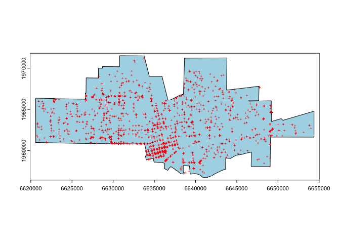
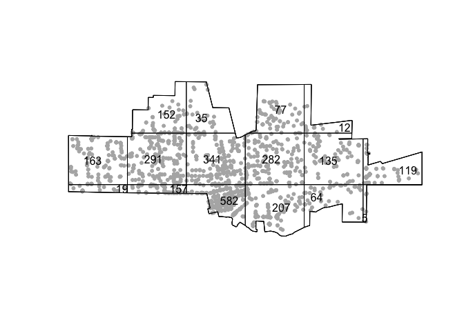
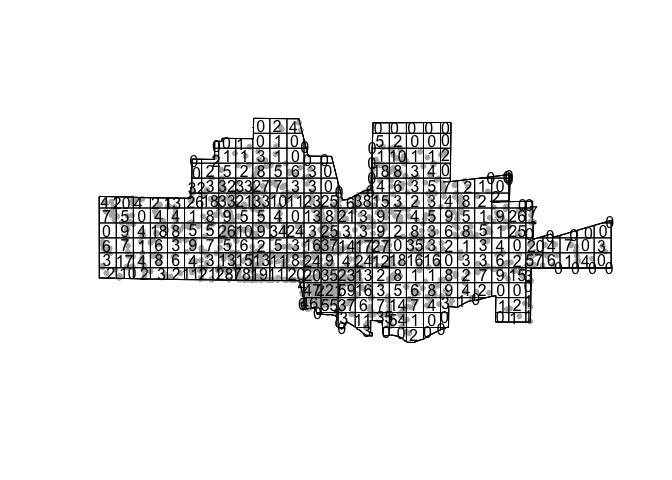
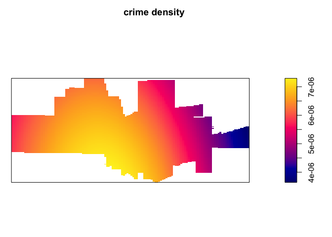
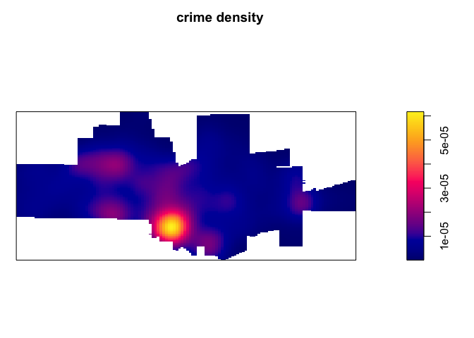
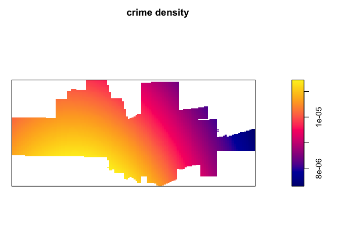
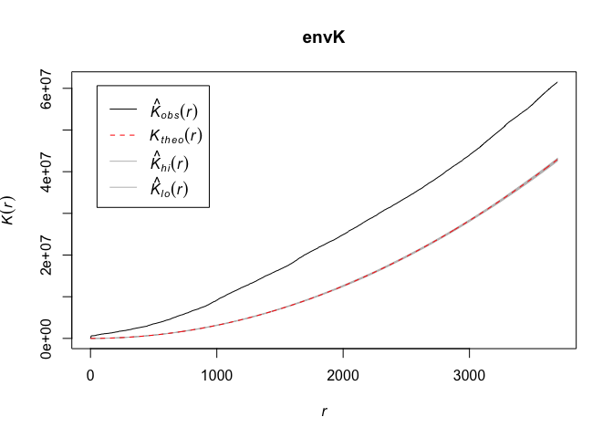
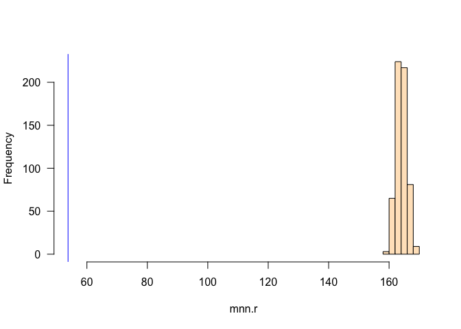
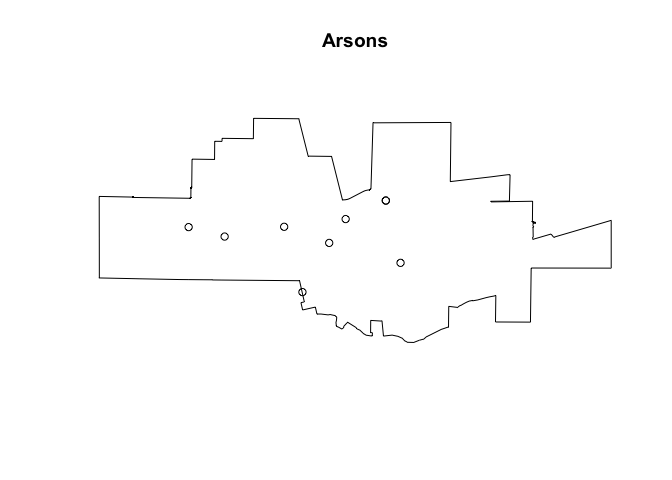

Point Pattern Analysis
GEO 200CN - Quantitative Geography
Professor Noli Brazil
May 6, 2024
The fundamental building blocks of vector or object data are points. As such, we start our journey into spatial data analysis by going through the basic methods for examining point patterns. This guide follows closely OSU Chapter 5. The objectives of the guide are as follows
- Learn spatstat package functions for setting up point data for analysis
- Learn first-order or density based measures for examining point patterns
- Learn second-order or distance based measures for examining point patterns
To help us accomplish these learning objectives, we will be examining crime in a nondescript city.
Installing and loading packages
We’ll be using a couple of new packages in this lab. First, install
spatstat using install.packages().
install.packages("spatstat")Next, install rspat using the following code. We
download rspat from Github because it is not available
on CRAN yet. Install the remotes package if you don’t
already have it, and then use the function install_github()
to download it from Github.
if (!require("rspat")) remotes::install_github('rspatial/rspat')Finally, load these and other required packages for this lab using
the function library()
library(spatstat)
library(rspat)
library(sf)
library(tidyverse)Why point pattern analysis?
Point data give us the locations of objects or events within an area. Objects can be things like trees or where an animal was last seen. They can also be houses, street lights or even people, such as the locations of where people were standing during a protest. Events can be things like the epicenter of an earthquake or where a wildfire was ignited. They can also be crimes or where someone tweeted something. Point pattern analysis can answer such questions like:
- What is the density of a process? If you work on crime, you may want to find out where crime is concentrated. If you work in public health, you might want to know where the density of cholera deaths are highest.
- How are points distributed across space? If you are a plant scientist, perhaps you are curious as to whether an invasive species is randomly dispersed or clustered across a study area.
- Are events or objects influencing the location of other similar events or objects? Back to our crime example, you might be interested in whether a crime will trigger future crimes to occur in the same area, following a contagion effect.
- Do (1)-(3) differ across some characteristic? You might be interested in whether certain crimes are more clustered than others so that you can employ different safety programs more efficiently.
You can also examine whether the density of your points covary or are influenced by other processes - such as species density and elevation.
Our research questions in this lab are: Does crime cluster in a nondescript American city? Does clustering vary by type of crime?
Bringing in the data
We will be using datasets from the rspat package.
Specifically, we bring in crime locations and the city boundaries. Bring
these data in using the function spat_data().
city <- spat_data("city")
crime <- spat_data("crime")city is an SpatVector spatial polygon object containing the boundaries of a city. crime is an SpatVector spatial points object containing crimes in the city. To see what we got, plot the city boundaries and the crime points.
par(mai=c(0,0,0,0))
plot(city, col='light blue')
points(crime, col='red', cex=.5, pch='+')
Does this city look familiar to you?
All point pattern analysis tools used in this lab guide are available in the spatstat package. These tools are designed to work with points stored as ppp objects and not SpatVector or sf objects. So, yes, another spatial object to learn about. We won’t go through the nuts and bolts of how ppp objects work. We’ll cover what is only necessary for running our analyses.
We need to convert our SpatVector crime
points object into a ppp object. To do this, we have to first
convert it to an sf object using the function
st_as_sf() because we can’t convert a
SpatVector directly into a ppp object.
crime.sf <- st_as_sf(crime)Then convert the object to a ppp object using the function
as.ppp(). We have to provide point coordinates and the
observation window. Below we obtain the coordinates of the
sf object in matrix form with
st_coordinates(), and consider the observation window as
the bounding box of the crime data which can be obtained with
st_bbox(). A bounding box can be used to define any area on
a map. It is commonly used by mapping applications to determine which
map features within a certain area should be displayed on a given
map.
crime.ppp <- as.ppp(st_coordinates(crime.sf), st_bbox(crime.sf))As we defined above, point data give the location of objects or events within an area. In addition to coordinates, points have other data attached to them called marks. Marks are essentially attributes of the point (i.e. species of tree, type of crime). Marks could be categorical (type of crime) or continuous (diameter of tree). Right now the crime.ppp object contains no attribute or marks information. We’ll add marks later in the guide.
marks(crime.ppp)## NULLPoint pattern analyses should have their study boundaries explicitly
defined. This is the window through which we are observing the points.
One example is the boundaries of a forest if you are studying tree
species distribution. In the current example, it is the boundaries of
our nondescript city. spatstat uses a special boundary
object - an owin, which stands for observation window. We will
need to coerce city to an object of class owin using
the function as.owin(). Before we do so, we have to convert
the SpatVector city into an sf
object.
city.sf <- st_as_sf(city)
cityOwin <- as.owin(city.sf)
class(cityOwin)## [1] "owin"To set or “bind” the city boundary owin to the
crime.ppp point feature object, use the Window()
function, which is a spatstat function.
Window(crime.ppp) <- cityOwinWe’re now set and ready to roll. Let’s do some analysis!
Centrography
Before considering more complex approaches, let’s compute the mean
center and standard distance for the crime data as described on page 125
of OSU. To calculate these values, you’ll need to extract the x and y
coordinates from the crime.ppp object using the
spatstat function coords()
xy <- coords(crime.ppp)And then compute the mean center following equation 5.1 on page 125.
We’ll use our friend summarize() to help us out here.
# mean center
mc <- xy %>%
summarize(xmean = mean(x),
ymean = mean(y))
mc## xmean ymean
## 1 6635644 1962882And then standard distance using equation 5.2 on page 125.
# standard distance
sd <- sqrt(sum((xy$x- mc$xmean)^2 + (xy$y - mc$ymean)^2) / nrow(xy))
sd## [1] 7130.572Density based measures
Centrography is rather dull because it ignores spatial variation in the data. Instead, we can explicitly examine the distribution of points across a geographic area. This is measuring first-order effects or examining point density. First-order effects or patterns look at trends over space.
Overall density
The overall density given in equation 5.3 in OSU on page 126 can be calculated as follows
CityArea <- expanse(city)
nrow(xy) / CityArea## [1] 0.0001027119The command expanse(city) calculates the area (in feet
squared) of our city, which represents the value a in formula
5.3. nrow(xy) represents the number of crimes in the city,
which represents the value n.
Overall density is a little bit better than the centrography measures, but it is still a single number, and thus we can do better. As OSU states on page 127, we lose a lot of information when we calculate a single summary statistic. Let’s go through the two “local” density approaches covered in OSU: Quadrat and Kernel density.
Quadrat counts
A basic yet descriptively useful visualization of point density is to
create a grid (often called quadrats) of your study area and count the
number of crimes in each grid cell. To compute quadrat counts (as on
p.127-130 in OSU), use spatstat’s
quadratcount() function. The following code chunk divides
the city boundary into a grid of 3 rows and 6 columns and tallies the
number of points falling in each quadrat.
qcounts1 <- quadratcount(crime.ppp, nx= 6, ny=3)The object qcounts1 stores the number of points inside each quadrat. You can plot the quadrats along with the counts as follows:
plot(crime.ppp, pch=20, cols="grey70", main=NULL)
plot(qcounts1, add=TRUE)
Wow, 582 crimes in that one bottom cell. That place must be really dangerous. Three-by-six might be too small. Let’s instead make a 15 by 30 grid.
qcounts2 <- quadratcount(crime.ppp, nx= 30, ny=15)then plot
plot(crime.ppp, pch=20, cols="grey70", main=NULL) # Plot points
plot(qcounts2, add=TRUE) # Add quadrat grid. 
In real life one should always try a range of row and column sizes to get a sense of how sensitive the results are (this is trying to deal with the “Bad News” OSU item Scale).
We’ll need to convert the resulting qcounts2 object into a data frame to calculate the variance-mean ratio (VMR) described on page 130 in OSU.
Qcount<-data.frame(qcounts2)And the VMR is
var(Qcount$Freq)/mean(Qcount$Freq)## [1] 32.25635Question 1: Explain why a VMR greater than 1 indicates spatial clustering.
Hypothesis testing
As OSU states on page 142- “It is one thing to create an index such as [the VMR]. but it is quite another to generate a significance test that answers the basic question posed at the bottom of Figure 5.14 (What can we infer about the process from the statistics?).
We can employ the Chi-square test for spatial randomness that OSU
describes on page 142-43 using the handy dandy
quadrat.test() function. The default is the Chi-square
test, but you can run the Monte Carlo test described on page 148 using
method = MonteCarlo.
quadrat.test(crime.ppp, nx= 30, ny=15)##
## Chi-squared test of CSR using quadrat counts
##
## data: crime.ppp
## X2 = 8022.1, df = 295, p-value < 2.2e-16
## alternative hypothesis: two.sided
##
## Quadrats: 296 tiles (irregular windows)Question 2: What are the null and alternative hypotheses for this test? What does the VMR score combined with the chi-square test tell us about the point pattern?
Kernel density
The kernel density approach is an extension of the quadrat method: Like the quadrat density, the kernel approach computes a localized density for subsets of the study area, but unlike its quadrat density counterpart, the sub-regions overlap one another providing a moving sub-region window.
The spatstat package has a function called
density.ppp() that computes a kernel density estimate of
the point pattern. A discussion of kernel density maps is located in
page 68-71 in OSU. That discussion points to two tuning parameters that
are important to consider when creating a kernel density map: the
bandwidth, which controls the size and shape of the radius, and the
kernel function, which controls how point counts are smoothed. We can
just accept the defaults and get the following map.
ds <- density.ppp(crime.ppp)
par(mai=c(0,0,0.5,0.5))
plot(ds, main='crime density')
We can alter the bandwidth using the sigma = argument. A
really large sigma makes the map too smooth
ds <- density.ppp(crime.ppp, sigma = 10000)
par(mai=c(0,0,0.5,0.5))
plot(ds, main='crime density')
A small sigma creates a map that captures really
localized clusters
ds <- density.ppp(crime.ppp, sigma = 1000)
par(mai=c(0,0,0.5,0.5))
plot(ds, main='crime density')
You can also change the kernel function by specifyingkernel = to one of four options “gaussian” (the default),
“epanechnikov”, “quartic” or “disc”.
Distance based measures
An alternative to density based methods are distance based methods whereby the interest lies in how the points are distributed relative to one another (a second-order property of the point pattern) as opposed to how the points are distributed relative to the study’s extent.
Mean Nearest-Neighbor Distance
The first distance-based method that OSU goes through is calculating
the mean nearest neighbor (MNN) distance. Here, you calculate for each
point the distance to its nearest neighbor. You do this using the
function nndist(), which is a part of the
spatstat package.
nn.p <- nndist(crime.ppp, k=1)We plug crime.ppp into nndist(), resulting in a
numeric vector containing the distance to each nearest neighbor
(k=1 specifies distance just to the nearest neighbor. Try
k= some other number and see what you get) for each
point.
head(nn.p)## [1] 0.0000 0.0000 0.0000 140.8069 0.0000 0.0000We find that the nearest crime to the crime in the 4th row of crime.ppp is 140.8069 feet. We need to take the mean to get the mean nearest neighbor
mnn.p <- mean(nn.p)
mnn.p## [1] 53.7598The mean nearest neighbor distance of 53.7598 feet (check
st_crs(crime) to find how we got feet as the units of
distance).
Hypothesis testing
The value 53.7598 seems small, indicating that crime clusters. But,
we can formally test this using the Clark and Evan’s R statistic
described on OSU page 143. The spatstat package has the
function clarkevans.test() for calculating this
statistic.
clarkevans.test(crime.ppp)##
## Clark-Evans test
## CDF correction
## Z-test
##
## data: crime.ppp
## R = 0.30992, p-value < 2.2e-16
## alternative hypothesis: two-sidedQuestion 3: What do the Clark Evans test results tell us about the point pattern? Explain why an R less than 1 indicates spatial clustering?
Distance Functions
The F, G, K and L functions are discussed on pages 145-148 in OSU. Our new friend spatstat provides canned functions for estimating these distributions.
The K-function summarizes the distance between points for all distances. The calculation of K consists of dividing the mean of the sum of the number of points at different distance lags for each point by the area’s density.
To compute the K function, use the function Kest().
K <- Kest(crime.ppp)Then plot it like on page 146 in OSU.
par(mfrow=c(1,1))
plot(K)
The plot returns different estimates of K depending on the edge correction chosen. By default, the isotropic, translate and border corrections are implemented. Edge corrections are discussed on pages 137-139 in OSU.
Unsurprisingly, to calculate the G, F and L functions, use the
functions Gest(), Fest(), and
Lest(), respectively, which take on the same form as
Kest().
OSU discusses calculating envelopes around the functions to examine
whether the observed functions are simply due to chance. Use the
envelope() function to create the envelopes. Here, we use
49 Monte Carlo simulations. This might take some time, so kick back a
bit, and grab a cool be…, errr, i mean a glass of organic non-GMO
electrolyte coconut water (no offense if you like this, it’s all
good).
#takes awhile
envK <- envelope(crime.ppp, fun = Kest, nsim = 49)
plot(envK)
It’s hard to see, but R is plotting the envelopes. They are just
really narrow. The default envelopes are the maximum and minimum values.
This is set by nrank in envelope(), which is
nrank=1. This means your confidence interval is
1-(2/50)## [1] 0.96The highest and lowest gives you two. And there are 50 K functions (49 simulations + observed K). Hence 2/50. Subtract by 1 to get the confidence level. OSU talks about the disadvantages of a simulation approach for computationally intensive calculations on page 151.
Replace Kest with Gest, Fest,
and Lest to get envelopes for the other alphabet
functions.
Question 4: Calculate the F and G functions. Interpret the results.
Marked Data
Marked data means data points with attributes. Like the height of a tree for tree points. In the crime data, we have a categorical variable indicating type of crime. As I mentioned in the beginning of our journey today, we are not going to do extensive work with marked point pattern analyses, but let’s do a little just to whet the appetite. For example, does the extent of clustering vary by crime type?
We have to go back to the crime sf object to create a marked crime ppp object. If your marks are categorical, make sure they are stored as factors in your ppp object. In our case, CATEGORY classifies each crime by its type.
table(crime.sf$CATEGORY)##
## Arson Assaults Auto Theft
## 9 172 86
## Commercial Burglary Drugs or Narcotics Drunk in Public
## 143 134 232
## DUI Grand Theft Hate Crimes
## 212 143 6
## Petty Theft Residential Burglary Robbery
## 665 219 49
## Vandalism Vehicle Burglary Weapons
## 355 221 15Is it a factor?
class(crime.sf$CATEGORY)## [1] "character"Make it a factor using as.factor(), and save it in a new
variable cat.
crime.sf$fcat <- as.factor(crime.sf$CATEGORY)Convert to ppp, set the mark, and set the window
crime2.ppp <- as.ppp(st_coordinates(crime.sf), st_bbox(crime.sf))
marks(crime2.ppp) <- as.factor(crime$CATEGORY)
Window(crime2.ppp) <- cityOwinWe can automatically split mpp by crime type using the
split.ppp() function
spp <- split.ppp(crime2.ppp)We can plot arsons
plot(spp$Arson, main = "Arsons")
Question 5: Using the spp object we created, use one first order and one second order method to compare the clustering of crime across the following types: Residential Burglary, Auto Theft, Drunk in Public, and Assaults. Summarize your results.
Resources
The procedures in this lab heavily relies on the spatstat package, which is very well documented. Paula Moraga’s book has a few great chapters on spatial point patterns.

This
work is licensed under a
Creative
Commons Attribution-NonCommercial 4.0 International License.
Website created and maintained by Noli Brazil